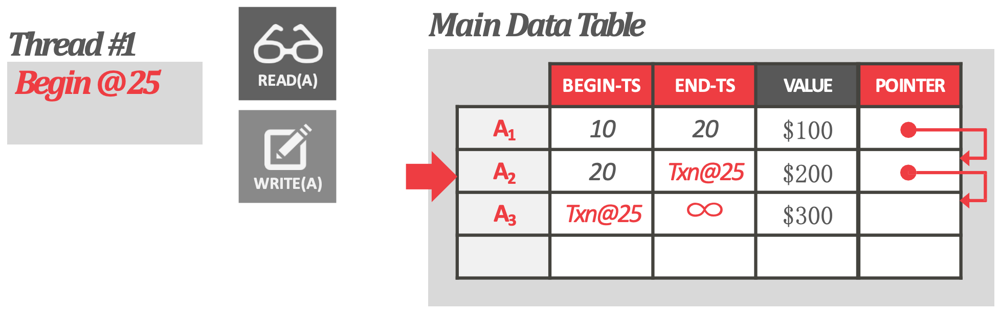
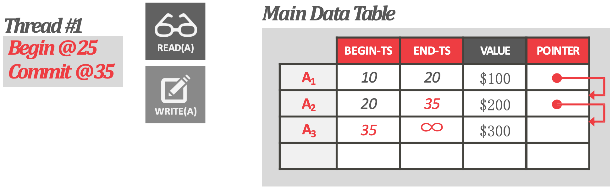
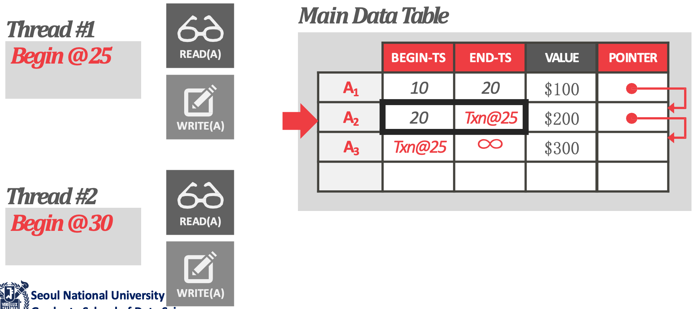
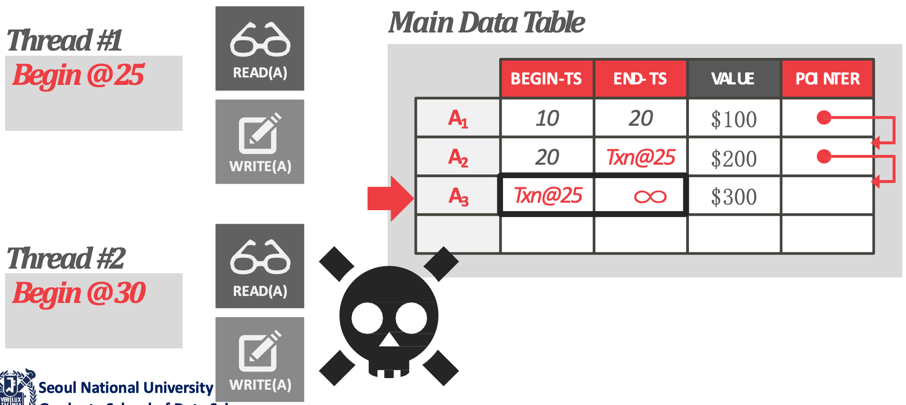
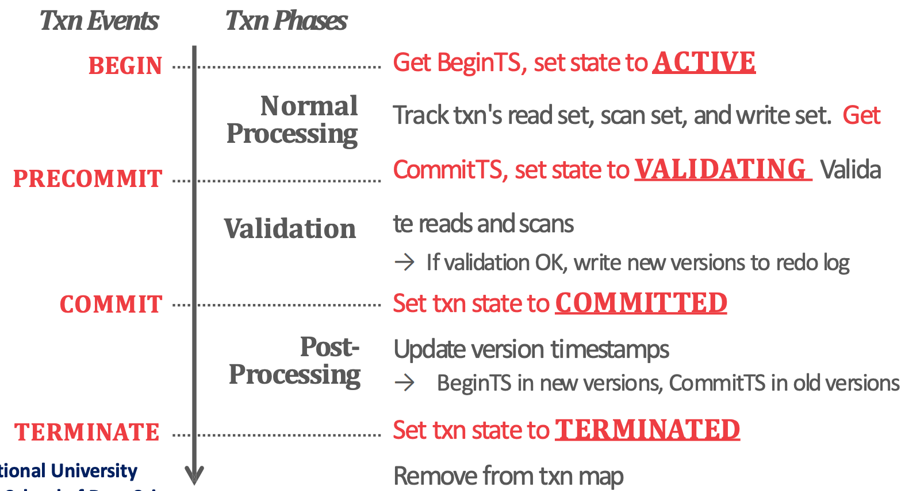
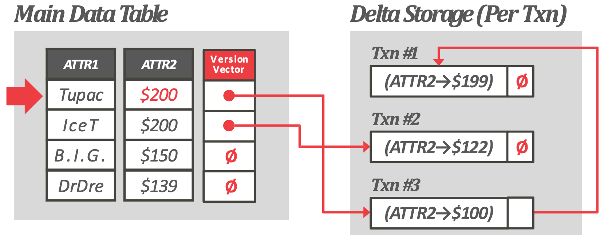
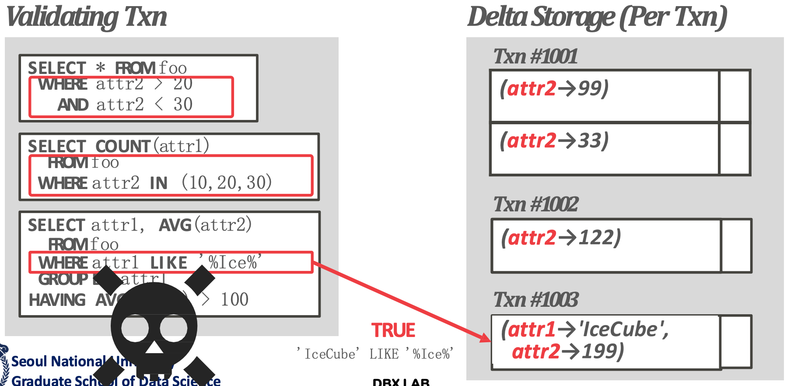
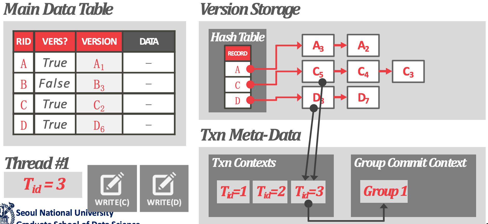

서울대학교 데이터사이언스대학원 정형수 교수님의 "빅데이터 및 지식 관리 시스템 2" 강의를 필기한 내용입니다.
완성되지 않은 강의록
- 사진이랑 보충 설명 넣고, Hekaton, HyPer, SAP HANA 는 별도의 논문 리뷰 작물로 분리할 계획입니다.
- 그리고 작물 migration 이후에는 alias 도 바꿔주는 것 잊지 말자.
MVCC 복습
Basic Concept
- MVCC: Single logival object, multiple physical versions
- 목적은 reader 와 writer 간의 blocking 을 하지 않도록 하는 것이다.
- Writer 와 writer 간의 blocking 은 당연히 발생한다.
- 부여받은 Timestamp 를 기준으로, snapshot read 를 하도록 한다. 즉, 이전의 snapshot 을 보게 되므로 time-travel 이 되는 것.
Version Storage
- Version storage 의 representation invariant 는 어떤 버전이 있다면, 그 버전을 필요로 하는 놈은 그것을 찾을 수 있어야 한다는 것이다.
- 종류
- Append-only, In-row: Table 에 version 을 그냥 때려박는 형식
- Time-travel, Off-row: Version 을 table space 에서 분리해서 별도의 저장공간에 저장하는 것.
- Delta: Version 에 전체 tuple 이 아닌, 변경사항만 적는 것.
- 순서
- Old-to-New (O2N): Version chain traversal 을 할 때, 오래된 것에서 최신의 것 순서로 방문하게 되는 것.
- New-to-Old (N2O): 반대로 version chain traversal 을 할 때, 최신의 것에서 오래된 것 순서로 방문하게 되는 것.
- O2N 의 경우에는 write 쿼리를 할 때 version chain 의 맨 마지막에 달아야 하기 때문에 version chain 을 끝까지 따라가야 하고, 각 version traversal 에 대해 write latch 를 붙잡는다. 이에 따라 read query 가 write latch 들에 의해 막혀 read 성능이 나빠진다.
- N2O 의 경우에는 OLAP 쿼리의 경우에 옛날 version 을 찾으러 version chain 을 쭉 따라가야 하고, 각 version traversal 을 할 때 page read latch 를 모두 붙잡기 때문에 latch 를 많이 잡게 된다. 이에 따라 write query 는 이 read latch 들에 계속 붙잡히기 때문에 성능이 구려진다.
- Postgres 는 in-row, append only, O2N 방식
- MySQL 에서는 time-travel storage 가 있음
- MySQL, Oracle 의 undo segment (rollback segment)
- MSSQL 의 Persistent Version Storage (PVS)
- 여기서 recovery 의 undo 도 담당한다
- 보통 delta 로 구현된다
Garbage Collection
- 만약 연속된 두 txn 의 begin timestamp 사이에 어떤 version 이 되면, 그놈은 아무도 못보기 때문에 dead version 이 되고 이 두 begin timestamp 사이를 dead zone 이라고 한다.
- Tuple level GC: 별도의 vaccumer 가 version traversal 을 하면서 version 하나씩 지운다.
- 주의할 것은 이것을 SeqScan 에서처럼 하면 안된다.
- SeqScan 할 때 version chase 를 안하고 그냥 xmin, xmax 만 보고 visibility 를 판단하니까 동일한 로직을 활용해 vacuumer 가 global min ts 를 가지고 이놈이 못보는 tuple 들은 전부 날려주면 되지 않겠나 싶겠지만 이렇게 하면 안된다.
- 왜냐면 linked list 생각해 보면 어떤 node 를 지운다는 것은 그것을 가리키고 있는 prev node 의 next pointer 도 고쳐줘야 하기 때문에, 이렇게 지우게 되면 version chain 이 끊긴다.
- 또한, 어차피 vacuumer 가 global min ts 를 가지고 있으니까 어차피 앞애 애들은 전부 날려도 되고, 따라서 chain 도 안끊기지 않냐라고 생각할 수 있는데 chain head 와의 연결이 끊어지므로 이것도 불가능하다.
- 근데 보통은 이 tuple level GC 는 vacuumer 하나로는 감당이 안된다. 그래서 몇몇 최적화가 들어가는데
- Postgres 에서는 cooperative 방식으로 scan txn 이 자신이 할 수 있는 만큼은 지워주게 되며
- 물론 이렇게 하면 scan throughput 은 좀 떨어지긴 한다.
- MySQL 에서는 undo space 의 page 를 보고 어떤 delta 들이 지워질 수 있는지 bitmap 으로 확인을 쭉 한 다음, 대부분 다 날릴 수 있으면 이 page 를 rebuild 하는 방식으로 하기도 한다.
- 주의할 것은 이것을 SeqScan 에서처럼 하면 안된다.
- Transaction-level GC: 이놈은 transaction 의 read, write set 을 가지고 있고 그럼 전체 system 입장에서는 누가 누구를 보고있는지가 파악이 되기 때문에 못보는 tuple 은 system 이 한번에 날리는 방식이랜다.
- 당연히 read, write set 을 갖고있어야 하기 때문에 memory footprint 가 커 in-memory 에서만 사용한다.
In-memory DB 1: MS Hekaton
- 여기서는 in-row 방식으로 version 을 관리하는데, 다음과 같이 수행한다.

- Update 를 할 때 txn id 를 최신 version 의 end ts 에 적어놓고 그 다음에 begin ts 를 txn id 로 하는 record 를 적어놓는다.
- 이때는 commit 되지 않았다는 의미에서 이 txn id 의 MSB 을 1 로 켜놓는다.

- 그리고 commit 할때 적어놓은 txn id 를 commit id 로 교체한다.
- 당연히 이때는 MSB 를 끈다.
- 따라서 이러한 방식이 OCC 에서 write set 와 같은 효과를 내는 것이다.

- 따라서 만약에 최신버전을 봐야하는 read txn 의 경우에는 write txn 이 begin ts 에 적어둔 txn id 를 보면 (즉, MSB 가 1인), 이놈은 내가 못읽는구나 라고 생각하고 그 이전 버전을 읽는다.

- 만약에 write txn 이 다른 write txn 이 적어둔 txn id 를 보면, txn id 가 내가 먼저냐 아니냐에 따라 OCC 면 abort 를 하던지, PCC 면 stall 을 하던지 한다.

- 이놈은 모든 txn 의 상태를 볼 수 있는 global txn map 이 있고, 각 txn 은 lifetime 동안 위와 같이 상태가 변하게 된다.
- 보면 특이한게 Post-Processing 이 있다: 이 단계에서 write txn 은 commit 을 할 때 txn id 를 commit id 로 바꾸는 작업을 한다.
- 때문에 update 한 record 가 많아질수록 commit overhead 가 커지는데, 그럼에도 불구하고 이 방식이 가능한 것은 Hekaton 이 in-memory DB 이기 때문이다.
- 이런 post-processing 의 경우에는 random write 이기 때문에 in-memory 에서는 유리하지만 disk-based 가 되면 성능이 곱창난다.
- 따라서 disk-based 에서는 이렇게 commit id 를 적어놓는게 아니고 txn id 만 적은 다음 commit 여부는 commit log 를 보고 결정하는 방식을 취하게 된다.
- 그리고 Hekaton 에서는 어떤 predicate 으로 어떤 table 에 어디부터 접근했는지를 Scan set 이라는 이름으로 저장해 놓고, scan 을 할때 새로 insert 된 놈이 있는지를 검사한다.
- 즉, 이렇게 함으로써 serializable isolation level 을 보장하는 것
- 이렇게 full serializable 을 제공해 주기 위해 BwTree 같은 latch-free 자료구조를 최대한 많이 썼다고 한다.
- 그래서 실제 성능도 잘 나온다.
In-memory DB 2: TUM HyPer

- HyPer 는 columnar DBMS 이고, 위 그림처럼 delta storage 를 사용해서 delta column 에서 이 delta storage 를 가리키게 하는 구조로 이루어져 있다.
- 그리고 이 delta storage 에서는 per-txn 으로 delta 를 적어주고 이것을 이용해 transaction-level GC 를 한다.
- 즉, 누가 누구를 보고 있는지를 추적하여 못보는 애들은 한번에 날려버릴 수 있도록 하는 것.

- 그리고 read serializable 을 위해서 HyPer 에서는 precision locking 을 이용한다.
- 이건 predicate locking 와 비슷한거다.
- scan 을 할 때 이 delta storage 를 보면서, scan predicate 에 걸리는 놈이 있는지 확인하고 만약에 있으면 이것을 abort 하는 방식이다.
In-memory DB 3: SAP HANA

- SAP HANA 에서는 데이터를 N2O 방향으로 저장한다.
- 여기서 table storage 에서는, version 이 존재하는지 가리키는 system column 을 추가하고
- Version storage 에서는, RID 를 key 로 하고 version chain 을 value 로 하는 hashtable 을 빌드해서 version chain 을 빠르게 찾을 수 있게 한다.
- 그리고 Txn context 라는 global txn map 을 관리하고 있고, 각 txn 이 생성한 version 들을 tracking 해서 transaction-level GC 를 수행한다.
- 또한 이 자료구조를 이용해 group commit 을 한다고 한다.